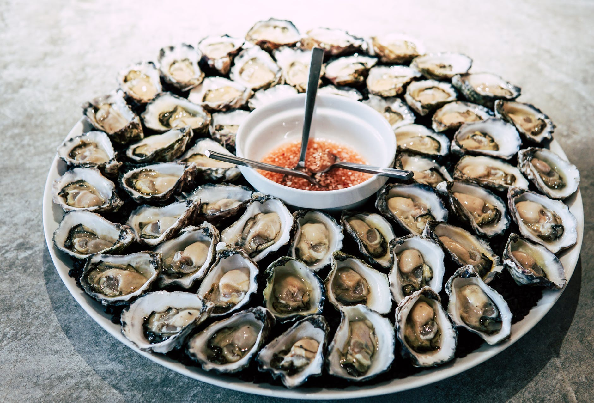

The Aegean Experience
Home
Menu
About us
Contact

Previous
Next
"So fresh you could practically taste the sea that was your view."
John Smith
RestauCritics
"The staff really puts the "experience" in The Aegean Experience"
Maria Papageorgiou
Greek Culinary Reviews
"The mix of traditional and modern is exceptionally done!"
Jane Davidson
The International Fork
"The taste was out of this world!"
Robert Doney
Knife and Fork Inc.